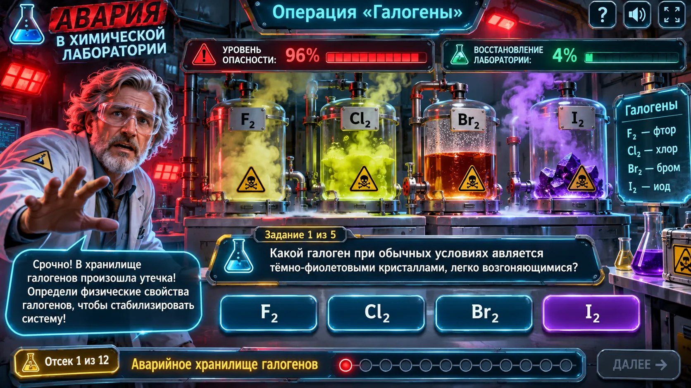

Нажми прямо на один из четырёх сосудов на картинке
Операция «Галогены»ОТСЕК 1 / 12 · АВАРИЙНЫЙ РЕЖИМ
ОПАСНОСТИ96%
ЛАБОРАТОРИИ4%
На полу замечены тёмные кристаллы. Определи, какой сосуд связан с этой утечкой.
⚠ СИГНАЛ АВАРИИ!
Повреждено хранилище галогенов. Локализуй утечки, нажимая прямо на защитные сосуды.
5 заданий · без таймера · нажимай прямо на сосуды мышкой или касанием